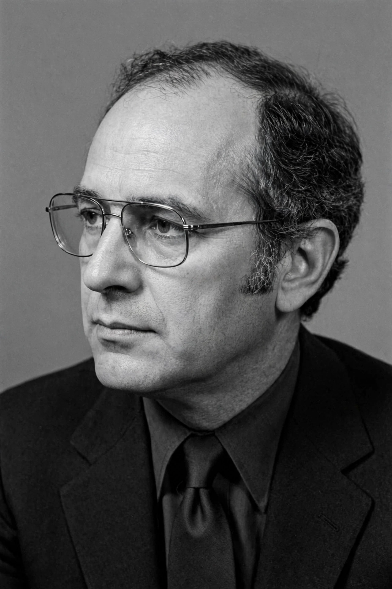

| Born | January 11, 1938, Georgetown, Washington, D.C., U.S. |
|---|---|
| Died | August 30, 1995 (aged 57), New York City, U.S. |
| Education | Harvard University (AB, PhD) |
| Known for | Black–Scholes model, Black–Derman–Toy model |
| Fields | Financial economics, applied mathematics |

Fischer Sheffey Black (January 11, 1938 – August 30, 1995) was an American economist, best known as one of the authors of the famous Black–Scholes equation. Together with Myron Scholes, and building on work extended by Robert C. Merton, he developed the model that revolutionized the pricing of options and other derivatives.
Black graduated from Harvard College in 1959 with a degree in physics. He initially pursued a doctorate in physics at Harvard but switched fields, earning a PhD in applied mathematics in 1964 with a dissertation on artificial intelligence. He then joined the consulting firm Arthur D. Little.
At Arthur D. Little, Black worked with Jack Treynor and began studying the capital asset pricing model and financial markets. In 1971 he moved to the University of Chicago, and later joined the MIT Sloan School of Management. His 1973 paper with Scholes, "The Pricing of Options and Corporate Liabilities," appeared in the Journal of Political Economy. In 1984 Black left academia for Goldman Sachs, where he led the quantitative strategies group and co-developed the Black–Derman–Toy interest-rate model.
Beyond option pricing, Black wrote influential works on monetary policy, the business cycle, and market efficiency, including the book Business Cycles and Equilibrium (1987) and the paper "Noise" (1986). Scholes and Merton received the 1997 Nobel Memorial Prize in Economic Sciences for the option pricing work; Black, who had died in 1995, was mentioned by the Nobel committee but was not eligible for the prize.
From Wikipedia, the free encyclopedia. Recreated from memory.